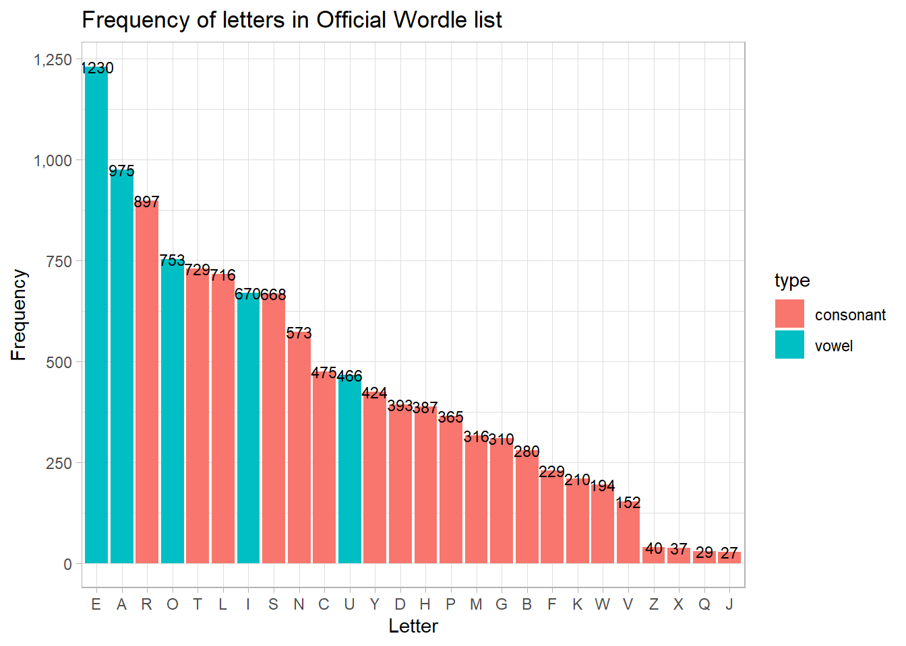
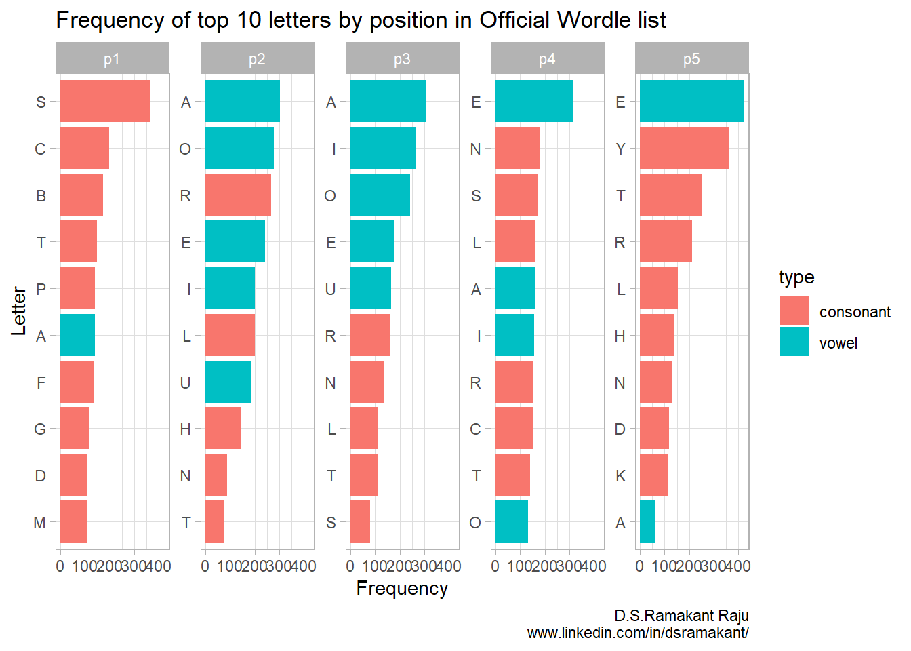

Who ever thought that a bunch of black and green boxes would bring out the logophile in us all? With friends and family groups sharing their progress, I find this to be an entertaining mind-puzzle to kickstart the day.
And I was not alone in my quest for 5 letter words. Wordle has tickled the fascination of many in the data science community. I found Arthur Holtz’s lucid breakdown of the Wordle dataset quite interesting. Of course, there is 3B1B’s incredibly detailed videos on applying Information Theory to this 6-by-5 grid. (original video as well as the follow-up errata)
Others have simulated the wordle game (like here) or even solved it for you (like this blog). I’ve read at least one blog post that has an academic take on the matter.
Fortunately for the reader, none of the above will be attempted by me. My inspiration comes from Gerry Chng’s Frequency Analysis Approach where I’ve tried to understand the most commonly occuring letters in the official word list by position by considering a ranking mechanism
What is a wordle?
The game rules are fairly simple:
You need to guess a 5-letter word. One new word is given every day
You are given 6 guesses
After every guess, each square is coded by a color
GREY: chosen letter is not in the word
YELLOW: chosen letter is in the word by wrong position
GREEN: chosen letter is in the word and in the correct position
Repetition of letters is allowed
That’s it!
In my opinion, one of the reasons for the game going viral is the way the results are shared. You’ve possibly seen something like this floating around:
Sample world share
…And if your family too has been bitten hard by the Wordle bug, then you would be familiar with group messages like this!
World share in whatsapp
Frequency analysis
Arthur Hotlz’s blog is a good place to start for extracting and loading the Official Wordle list. After parsing and cleaning the data, here’s all the words broken down into a single rectangular dataframe word_list .
Update 29th Jan ’23: NYT’s .js file is not retrieving any list for some reason. I’ve referred to Arjun Vikram’s repo on dagshub
Code
knitr::opts_chunk$set(warning =FALSE, message =FALSE) suppressMessages({ library(httr)library(dplyr)library(stringr)library(ggplot2)library(ggthemes)library(scales)library(tidyr)library(tibble)library(forcats)library(knitr)library(kableExtra)theme_set(theme_light())})url <-"https://www.nytimes.com/games/wordle/main.18637ca1.js"#not workingurl2 <-"https://dagshub.com/arjvik/wordle-wordlist/raw/e8d07d33a59a6b05f3b08bd827385604f89d89a0/answerlist.txt"wordle_script_text <-GET(url2) %>%content(as ="text", encoding ="UTF-8")# word_list = substr(# wordle_script_text,# # cigar is the first word# str_locate(wordle_script_text, "cigar")[,"start"],# # shave is the last word# str_locate(wordle_script_text, "shave")[,"end"]) %>%# str_remove_all("\"") %>%# str_split(",") %>%# data.frame() %>%# select(word = 1) %>%# mutate(word = toupper(word))wordle_list <-str_split(wordle_script_text, "\n")wordle_list <-data.frame(wordle_list) wordle_list <-rename(wordle_list, word =names(wordle_list)[1] ) %>%mutate(word =toupper(word)) #renaming column to 'word'dim(wordle_list)
Modification to the above is another dataframe with each of the characters separated into columns which we’ll call position_word_list
The line select(-x) removes the empty column that is created due to the seperate() function
Code
position_word_list <- wordle_list %>%separate(word, sep ="", into =c("x","p1","p2","p3","p4","p5")) %>%select(-x)head(position_word_list,10)
p1 p2 p3 p4 p5
1 C I G A R
2 R E B U T
3 S I S S Y
4 H U M P H
5 A W A K E
6 B L U S H
7 F O C A L
8 E V A D E
9 N A V A L
10 S E R V E
Now onto some frequency analysis. Here’s a breakdown of all the letters in the wordle list sorted by number of occurrences stored in letter_list and creating a simple bar graph.
Code
letter_list <- wordle_list %>%as.character() %>%str_split("") %>%as.data.frame() %>%select(w_letter =1) %>%filter(row_number()!=1) %>%filter(w_letter %in% LETTERS) %>%mutate(type =case_when(w_letter %in%c("A","E","I","O","U") ~"vowel", T ~"consonant")) %>%group_by(w_letter, type) %>%summarise(freq =n()) %>%arrange(desc(freq))letter_list %>%ungroup() %>%ggplot(aes(x =reorder(w_letter, -freq), y = freq))+geom_col(aes(fill = type))+scale_y_continuous(labels = comma)+geom_text(aes(label = freq), size =3)+labs(x ="Letter", y ="Frequency",title ="Frequency of letters in Official Wordle list")

This is interesting. Now I’m curious to know the top words by each position. To do this, I created a single table called freq_table that provides me with the frequency of occurrences by position for each letter. To iterate this process across all the 5 places, I used a for loop. Output is generated via the kableExtra package which provides a neat scrollable window
Code
#declaring null tablefreq_table <-tibble(alpha = LETTERS)for(i in1:5){ test <- position_word_list %>%select(all_of(i)) %>%# group_by_at() used for column index IDgroup_by_at(1) %>%summarise(f =n()) %>%arrange(desc(f)) %>%#first column returns p1, p2.. etc and is standardisedrename(a =1) #adding the freq values to a new dataframe freq_table <- freq_table %>%left_join(test, by =c("alpha"="a")) #renaming column name to reflect the position numbercolnames(freq_table)[1+i] =paste0("p",i)rm(test)}#replacing NA with zerofreq_table[is.na(freq_table)] <-0#output using kable's scrollable window kable(freq_table, format ="html", caption ="Frequency Table") %>%kable_styling() %>%scroll_box(width ="70%", height ="300px") %>%kable_classic()
Frequency Table
alpha
p1
p2
p3
p4
p5
A
140
304
306
162
63
B
173
16
56
24
11
C
198
40
56
150
31
D
111
20
75
69
118
E
72
241
177
318
422
F
135
8
25
35
26
G
115
11
67
76
41
H
69
144
9
28
137
I
34
201
266
158
11
J
20
2
3
2
0
K
20
10
12
55
113
L
87
200
112
162
155
M
107
38
61
68
42
N
37
87
137
182
130
O
41
279
243
132
58
P
141
61
57
50
56
Q
23
5
1
0
0
R
105
267
163
150
212
S
365
16
80
171
36
T
149
77
111
139
253
U
33
185
165
82
1
V
43
15
49
45
0
W
82
44
26
25
17
X
0
14
12
3
8
Y
6
22
29
3
364
Z
3
2
11
20
4
This table looks good. However, for my visualisation, I want to plot the top 10 letters in each position. For this, I’m going to use pivot_longer() to make it easier to generate the viz.
So we have the # of occurences in each position laid out in a tidy format in one long rectangular dataframe. Now sprinkling some magic courtesy ggplot
Side note on reordering within facets
I tried my best to understand why I was unable to sort within each facet in spite of using free_y. Apparently that’s a known issue and a workaround has been discussed by David Robinson, Julia Silger and Tyler Rinker. To achieve this, two more functions need to be created reorder_within and scale_y_reordered
Code
reorder_within <-function(x, by, within, fun = mean, sep ="___", ...) { new_x <-paste(x, within, sep = sep) stats::reorder(new_x, by, FUN = fun)}scale_y_reordered <-function(..., sep ="___") { reg <-paste0(sep, ".+$") ggplot2::scale_y_discrete(labels =function(x) gsub(reg, "", x), ...)}freq_table_long10 %>%mutate(type =case_when(alpha %in%c("A","E","I","O","U") ~"vowel", T ~"consonant")) %>%ggplot(aes(y =reorder_within(alpha, freq, position), x = freq))+geom_col(aes(fill = type))+scale_y_reordered()+facet_wrap(~position, scales ="free_y", ncol =5)+labs(x ="Frequency", y ="Letter",title ="Frequency of top 10 letters by position in Official Wordle list ",caption ="D.S.Ramakant Raju\nwww.linkedin.com/in/dsramakant/")

Aha! Things are starting to get more clearer. Highly common letters in the 1st position are S, C, B, T and P - notice there’s only 1 vowel (A) that occurs in the top 10. Vowels appear more frequently in the 2nd and 3rd positions. Last position has a higher occurrence of E, Y, T, R & L
Which words can be the best Worlde openers?
Armed with the above knowledge, we now can filter out the commonly occurring words. Also I use a naive method to rank these words basis the occurrence of the letters. For instance, in the picture above, the word S A I N T seems to be a valid word comprising of the top occurring letters.
Admittedly, I use a pretty crude method to determine the best openers. Known drawbacks of this methodology are:
Doesn’t consider the future path of the word (number of steps to get to the right word)
Only considers the rank of the letters and not the actual probability of occurrence
With that out of the way, I was able to determine that there are 39 words that can be formed with the top 5 occurring letters in each position. I’ve created a score that is determined by the rank of each letter within its position. For instance, S A I N T gets a score of 9 by summing up 1 (S in first position) + 1 (A in second position) + 2 (I in third) + 2 (N in fourth) + 3 (T in fifth). The lower the score, the higher the frequency of occurrences. Scroll below to read the rest of the words.